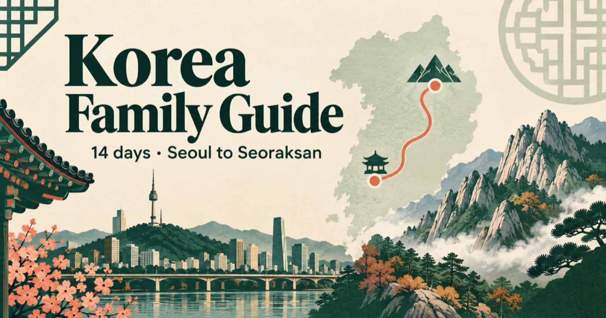
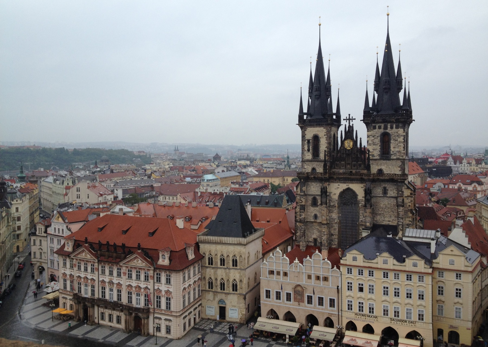
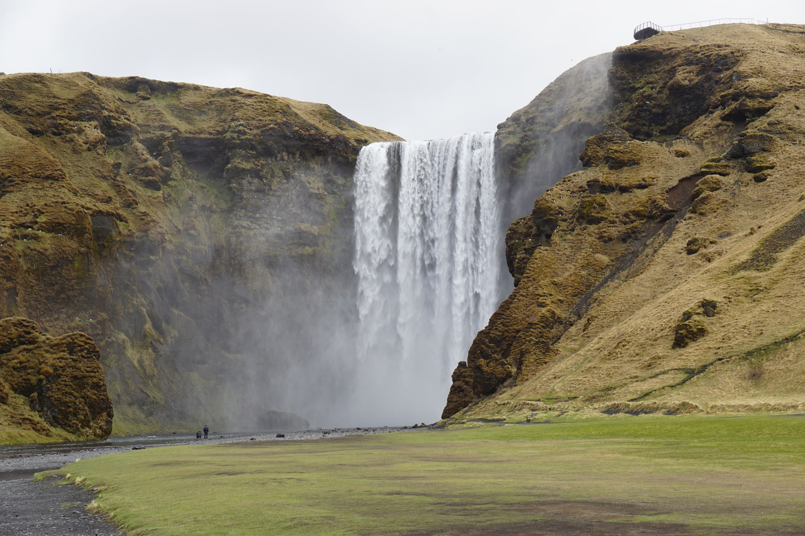
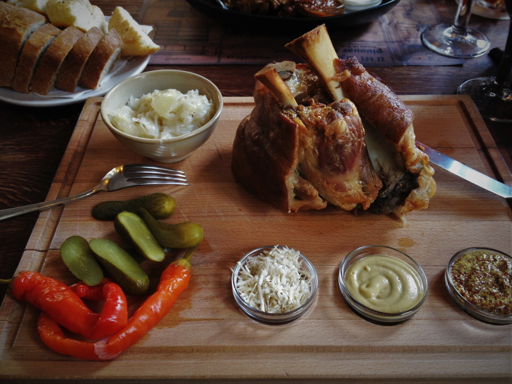

South Korea · 14 days
Across Korea as a family
Seoul to Seoraksan through markets, temple towns, coast and mountain.
Prototype edition · From Sydney to everywhere
Family journeys through culture, food and the outdoors — the moments we remember, and the details that might help you make a journey of your own.
Three ways into every place
A trip is never just a list of sights. These are the three threads that run through the journeys we remember most.
Neighbourhoods, traditions, history and the small encounters that give a city its character.
The meals that became part of the story — and the ones we would cross a border to eat again.
Trails, coastlines, mountains and the days when the landscape became the destination.
The family archive
Each journey holds the full story: where we went, what our family experienced, what surprised us and what another traveller may find useful.

Old-town streets, a table-sized pork knuckle and a café worth lingering in.

Seoul to Seoraksan through markets, temple towns, coast and mountain.

Waterfalls, black beaches and the joy of letting the landscape set the pace.

A story that crosses borders
Not a definitive ranking and not a restaurant directory. This is a living list of tastes that became inseparable from the places where we found them.
Open the living listExplore geographically
The map is another way into the archive: begin with a country, then uncover its journeys, meals, walks and stories.
Why this exists
This is our family’s travel archive: a place to remember the journeys we have taken and the seasons of life in which we took them. We share the useful parts in the hope that something here nudges another family towards a memorable journey of their own.